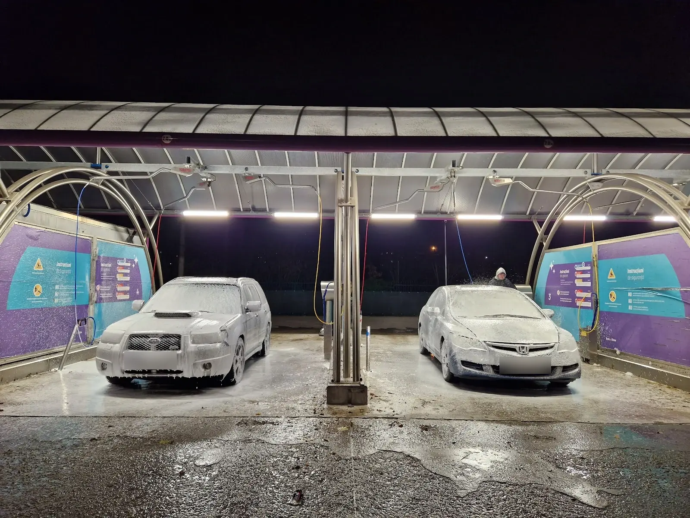
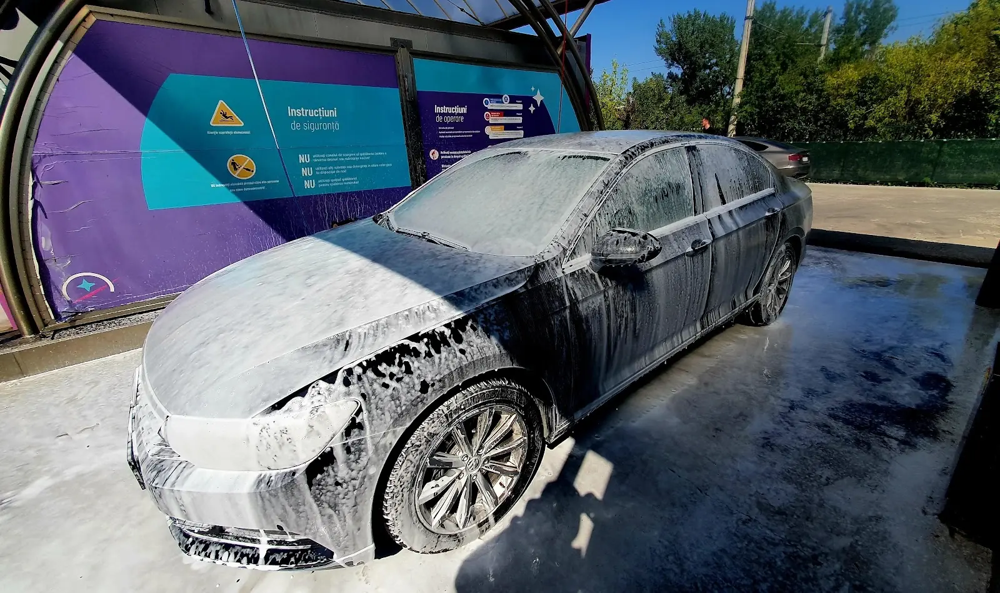
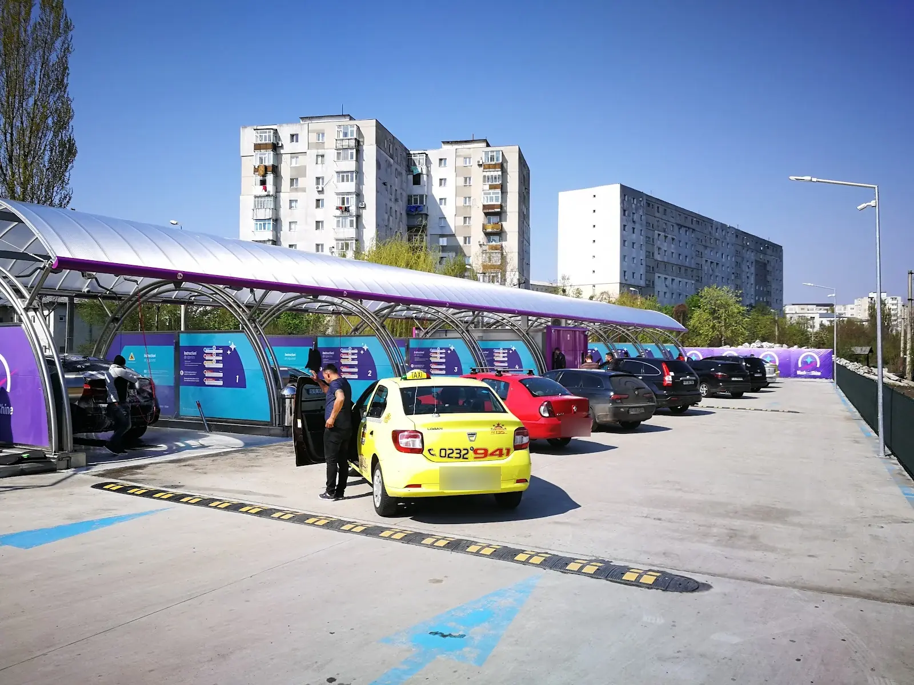
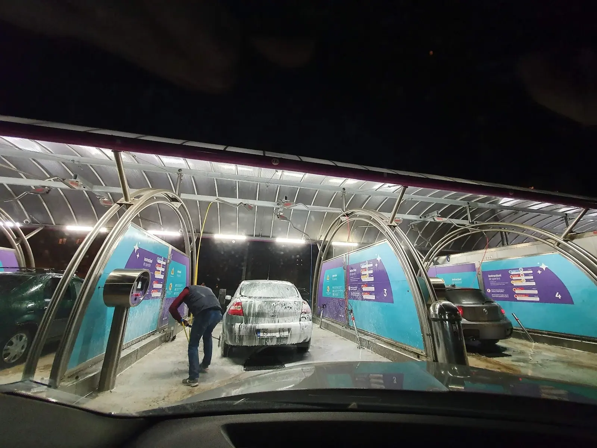
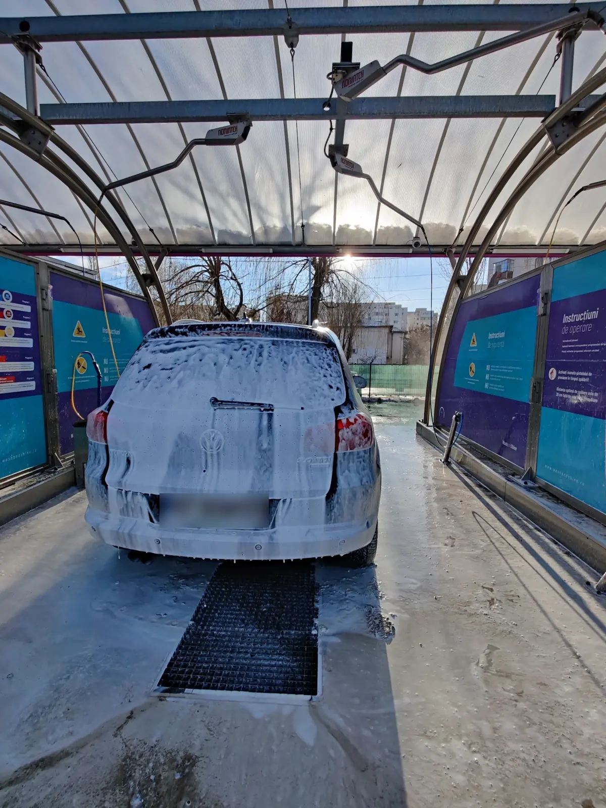
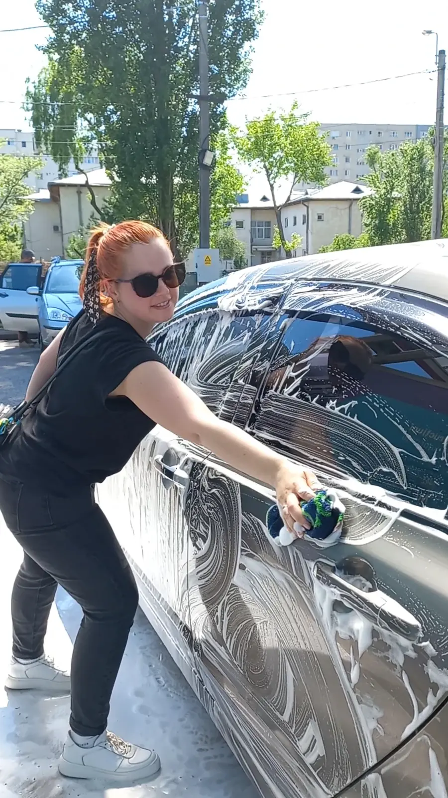
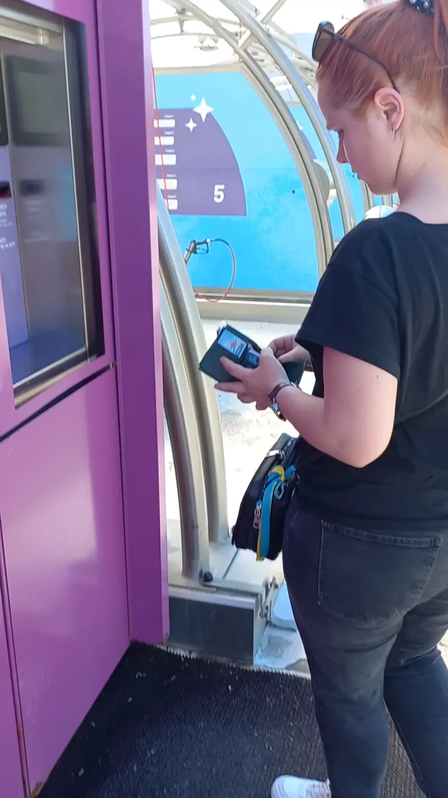
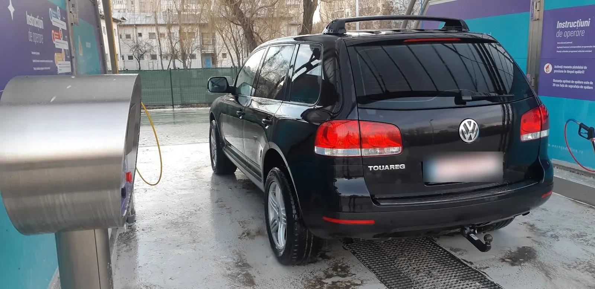

{{Self-service · Șoseaua Națională · Iași|Self-service · Șoseaua Națională · Iași|Self-service · Șoseaua Națională · Iași}}
{{Spumă|Foam|Espuma}}{{la orice oră.|any hour.|a qualquer hora.}}
{{Deschis nonstop. Intri în box, plătești la automat, ții tu lancea. Mașina pleacă albă de spumă și se întoarce curată.|Open around the clock. Drive into a bay, pay at the machine, hold the lance yourself. The car goes in white with foam and comes out clean.|Aberto sem parar. Entra na box, paga na máquina, segura a lança. O carro fica branco de espuma e sai limpo.}}
{{Prima dată aici?|First time here?|Primeira vez aqui?}}
{{Patru gesturi, nicio coadă la casă|Four moves, no queue at a till|Quatro gestos, sem fila na caixa}}
{{La self-service tu ești spălătorul. Iată ordinea, așa cum o vezi pe panourile violet din fiecare box.|At a self-service wash you are the washer. Here is the order, as shown on the violet panels in the bays.|Num self-service quem lava é você. A ordem é esta, como está nos painéis violeta das boxes.}}
{{Intri în box|Pull into a bay|Entre na box}}
{{Boxele sunt acoperite și numerotate. Oprești cu mașina pe grătar.|The bays are covered and numbered. Stop with the car over the grate.|As boxes são cobertas e numeradas. Pare o carro em cima da grelha.}}
{{Plătești la automat|Pay at the machine|Pague na máquina}}
{{Automatul violet e lângă box. Monede, jetoane sau card: de confirmat|The violet machine is next to the bay. Coins, tokens or card: to be confirmed|A máquina violeta fica junto à box. Moedas, fichas ou cartão: a confirmar}}
{{Alegi programul|Pick the program|Escolha o programa}}
{{Programele sunt scrise pe panoul „Instrucțiuni de operare” din box.|The programs are listed on the “Instrucțiuni de operare” panel in the bay.|Os programas estão no painel «Instrucțiuni de operare» da box.}}
{{Speli și pleci|Wash and go|Lave e saia}}
{{Lancea e a ta cât curge timpul. La final eliberezi boxul pentru următorul.|The lance is yours while the time runs. When done, free the bay for the next car.|A lança é sua enquanto o tempo corre. No fim, liberte a box para o seguinte.}}
{{Calculator|Calculator|Calculadora}}
{{Câte jetoane îți trebuie?|How many tokens do you need?|Quantas fichas precisa?}}
{{Spune-ne ce mașină ai și ce vrei să faci. Îți calculăm minutele de lucru, iar dacă știi cât ține un jeton, și câte să pregătești.|Tell us your car and what you want to do. We work out the minutes, and if you know how long one token lasts, how many to bring.|Diga-nos o carro e o que quer fazer. Calculamos os minutos e, se souber quanto dura uma ficha, quantas levar.}}
{{Minutele sunt o estimare pentru planificare, nu un tarif. Prețul pe jeton: de confirmat|Minutes are a planning estimate, not a price. Price per token: to be confirmed|Os minutos são uma estimativa para planear, não um preço. Preço por ficha: a confirmar}}
{{Boxele, ziua și noaptea|The bays, day and night|As boxes, de dia e de noite}}
{{Violet, turcoaz și multă spumă|Violet, turquoise and plenty of foam|Violeta, turquesa e muita espuma}}







{{Nota pe Google Maps|Rating on Google Maps|Nota no Google Maps}}
{{Numărul de recenzii: de confirmat|Number of reviews: to be confirmed|Número de avaliações: a confirmar}}
{{Unde ne găsești|Where to find us|Onde estamos}}
{{Pe Națională, cu luminile aprinse|On Națională, lights on|Na Națională, de luzes acesas}}
- {{Adresa|Address|Morada}}Șoseaua Națională, 700259 Iași
- {{Program|Hours|Horário}}{{Deschis nonstop, 7 zile din 7|Open nonstop, 7 days a week|Aberto sem parar, 7 dias por semana}}
- {{Telefon|Phone|Telefone}}0755 503 635
- {{Plată|Payment|Pagamento}}{{de confirmat|to be confirmed|a confirmar}}
- {{Prețuri|Prices|Preços}}{{de confirmat|to be confirmed|a confirmar}}